[07] Ordbøker, tekstlikhet og sentiment

Solveig Bjørkholt <solveig.bjorkholt@stv.uio.no>
Disposisjon
- Ordfrekvens og ordbøker
- Hva ordfrekvens kan brukes til
- Hva en ordbok er
- Hvordan bruke ordbøker
- Tekstlikhet
- Cosinelikhet
- Hvordan vektorisere ved likhetsanalyser
- Distansemål
- Sentiment
- Hva er sentiment
- Hvordan gjennomføre en sentimentanalyse
Ordbøker

Ordfrekvens
- Noen ganger kan det være nok å telle ord
- Må ofte kobles med kvalitativ analyse
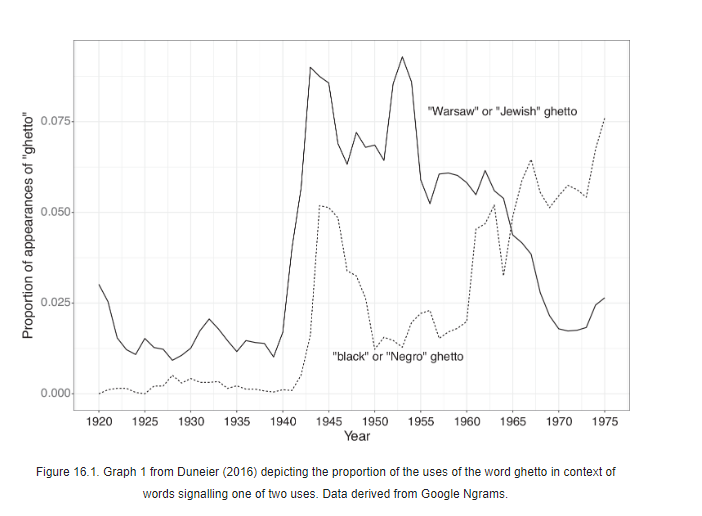
Mitchell Duneier (2016) Ghetto: The Invention of a Place, the History of an Idea
Datasett: Tweeter om Brexit
- Tweeter om Brexit fra januar til mars 2022
- Samlet inn til i en masteroppgave om polarisering rundt Brexit
- Utvalg hentet basert på Twitter bio (indikasjoner på om personen er for eller mot Brexit) . . .
Hva forteller dette plottet oss om Brexit?
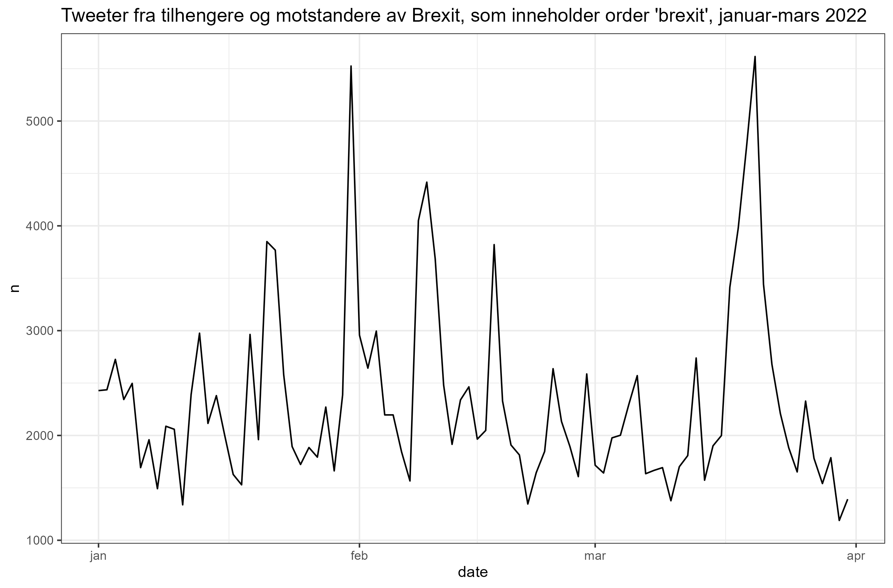
Ordbøker
En systematisert ordtelling
Lag en liste med ord som deler inn kategorier innenfor et konsept, f. eks. “positiv” og “negativ” tone
Tell opp hvor ofte hvert ord dukker opp i tekstene
Lag et vektet (sammenliknbart) mål, f. eks. andel av ord som er X og andel som er Y
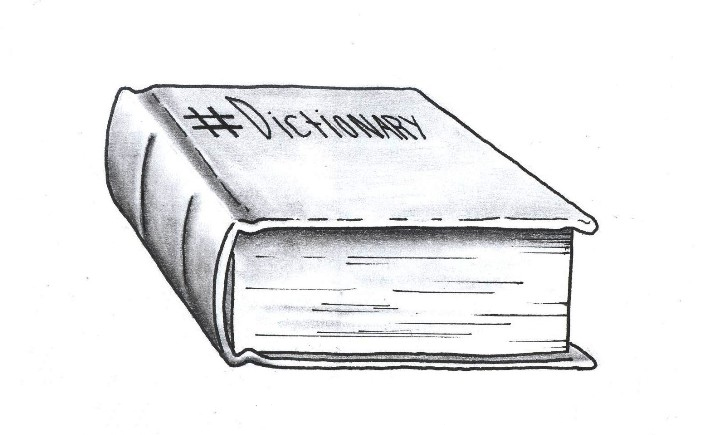
Ordbøker
Ordbok for å klassifisere de som er positive og negative til brexit utfra deres twitter-bio.
ordbok <- tibble(positiv = c("anti eu", "pro brexit", "brexit support"),
negativ = c("pro eu", "anti brexit", "rejoin eu"))
ordbok## # A tibble: 3 x 2
## positiv negativ
## <chr> <chr>
## 1 anti eu pro eu
## 2 pro brexit anti brexit
## 3 brexit support rejoin eubrexit %>%
select(influencer, twitter_bio) %>%
unique() %>%
group_by(influencer) %>%
unnest_tokens(input = twitter_bio,
output = ord,
token = "ngrams",
n = 2) %>%
mutate(brexitanti = ifelse(ord %in% ordbok$negativ, 1, 0),
brexitpro = ifelse(ord %in% ordbok$positiv, 1, 0)) %>%
group_by(influencer) %>%
summarize(brexit_anti = sum(brexitanti),
brexit_pro = sum(brexitpro))## # A tibble: 6,623 x 3
## influencer brexit_anti brexit_pro
## <chr> <dbl> <dbl>
## 1 @_____macky_____ 1 0
## 2 @_____Macky_____ 1 0
## 3 @___angelheart__ 2 0
## 4 @___macky__ 1 0
## 5 @_Andy_Denis_ 0 0
## 6 @_deadmansurfing 0 0
## 7 @_dunnster 0 0
## 8 @_glennteale 0 0
## 9 @_is0bel_ 2 0
## 10 @_jane_whittle 0 0
## # ... with 6,613 more rows
- Hvis disse og disse ordene dukker opp i teksten
- Så er det tegn på at teksten passer innenfor kategori X
Eksempler på ferdiglagde ordbøker
- General Inquirer -
SentimentAnalysis - Bing -
tidytext - MPQA Subjectivity Lexicon -
abhy/sentiment - Loughran -
quanteda - Vader -
vader - Norwegian sentiment lexicon -
martigso/NorSentLex
Fordeler og ulemper med ordbok-baserte metoder
Fordeler
- Enkelt å sette opp
- Billig å anvende
- Mange eksisterende ordbøker man kan bruke
Ulemper
- Kontekstavhengig
- Krever svært mye validering
- Utarbeiding av egne ordbøker er tidkrevende
Diskusjonsspørsmål
- Hva er egenskaper ved en god ordbok?
- Hvilke ord tenker du bør befinne seg i en ordbok som forsøker å måle teknisk språk vs. allment språk?
- Kan vi måle ordfrekvens når vi har tokenisert inn i bigrams?

Tekstlikhet
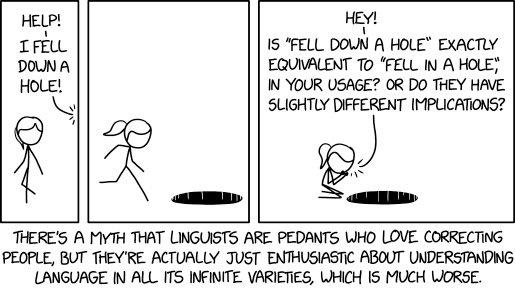
Hvorfor tekstlikhet?
- Startet med informasjonsinnhenting innenfor informasjonskunnskap
- Hvordan vite at vi har funnet alle dokumenter som er relevante for et søk?

- Men svært relevant også i samfunnsfaglig forskning
- F. eks. Hvor like er to talere hverandre?
Likhetsmål
Et likhetsmål har visse egenskaper:
Maksimal likhet oppstår når man sammenlikner et dokument med seg selv
Dokumenter som ikke deler noen ord har ingen likhet
Likhet øker ettersom flere av de samme ordene brukes
Symmetri - dokument A likner like mye på dokument B som B likner på A
Cosinelikhet
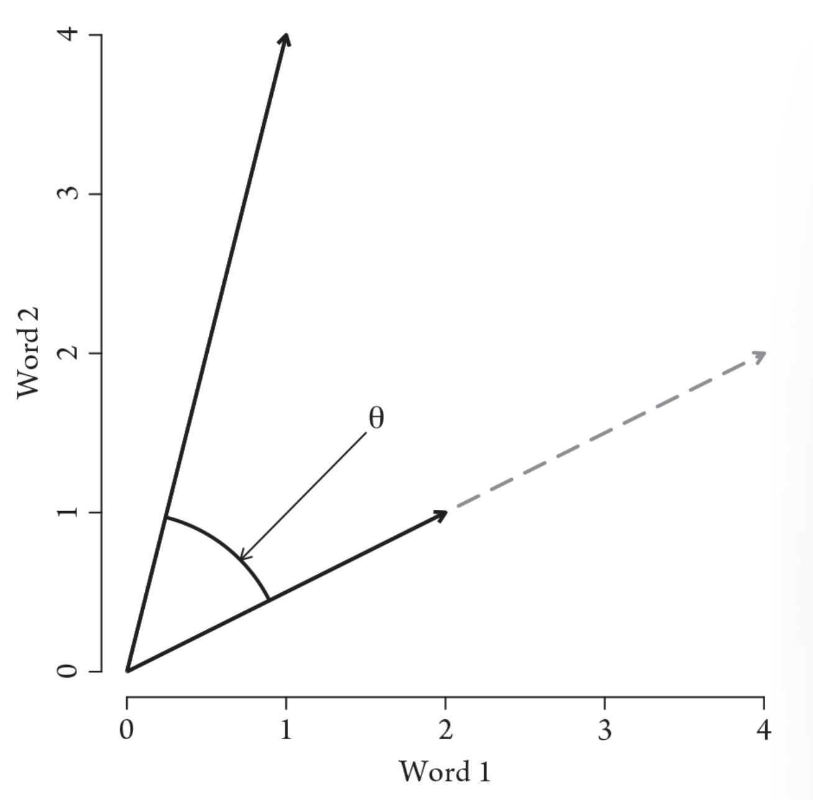
- Sammenlikn hvor mange ord som er like mellom to dokumenter
- Mål cosine (grad) for å unngå at antall ord påvirker estimatet
- Varierer mellom 0 og 1 (vanligvis -1, men vi kan ikke ha negativt antall ord)
Hvordan bør ord vektoriseres ved likhetsmål?
Eksempel: Sammenlikne tre forskjellige tweetere
| influencer | twitter_bio | country | antall_tweets |
|---|---|---|---|
| @BreamoreBoy | The only good brexiteer is a dead brexiteer. | Unknown | 1704 |
| @mrkwilkinson1 | Brexiteer love my country<U+0001F1EC><U+0001F1E7><U+0001F3F4><U+000E0067><U+000E0062><U+000E0077><U+000E006C><U+000E0073><U+000E007F> ,hate the way politicians let down there voters ! | United Kingdom | 18 |
| @UKBreturn | Adrienne <U+0001F499>Older Sweary ANTI BREXITEER RE-JOIN ANTI TORY.. Retired headteacher..<U+0001F393>doting grandma who believes “Fortune favours the brave” FBPPR# no messages .. | United Kingdom | 336 |
Hvordan bør ord vektoriseres ved likhetsmål?
Sekk med ord
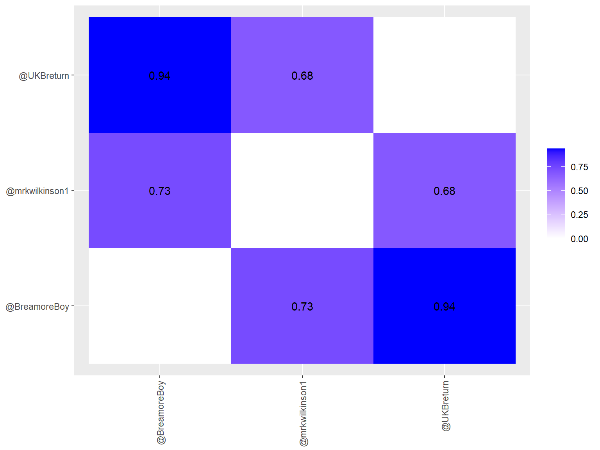
Hvordan bør ord vektoriseres ved likhetsmål?
TF-IDF
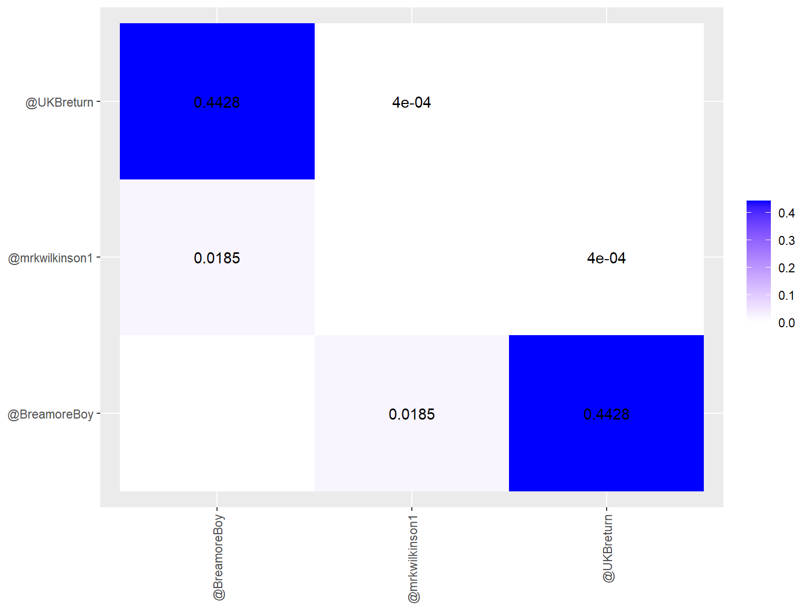
Avstandsmål
Finner avstand mellom tekster.
- Euclidean distanse = den vanligste
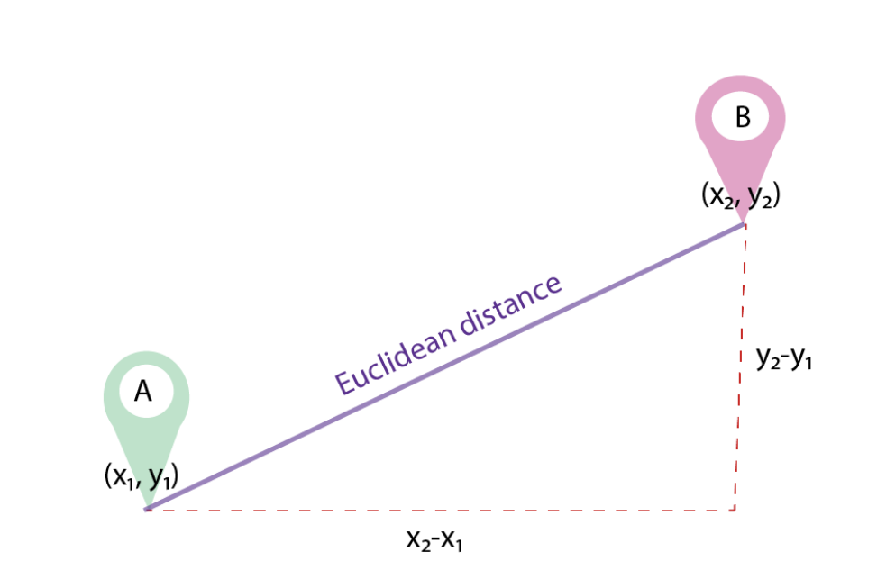
Avstandsmål
Men det finnes andre, f. eks.:
- Minkowski distanse
- Manhattan distanse
- 1 - cosine
Hvilken man bruker avhenger av analyseformålet.
## # A tibble: 3 x 3
## item1 item2 distance
## <fct> <fct> <dbl>
## 1 @BreamoreBoy @mrkwilkinson1 0.0264
## 2 @BreamoreBoy @UKBreturn 0.0135
## 3 @mrkwilkinson1 @UKBreturn 0.0269Utfordringer med likhetanalyser
Dokumenter må være samme språk
Hva som er likhet kan variere
- Hva er likest? To anmeldelser av filmer der begge er positive eller begge er av samme film?
Dokumenter kan snakke om det samme med på forskjellige måter
- Ord-embedding kan hjelpe her (kontekst heller enn ord)
Diskusjonsspørsmål
- Hvordan tror du det å sette alle ord til liten bokstav kan påvirke likhetsmål?
- Hvordan tror du det å ta ut stoppord kan påvirke likhetsmål?
- Kan du tenke deg noen analyseformål der det er bedre å bruke sekk med ord enn TF-IDF som tekst-vektorisering for å måle cosine-likhet?
Sentiment
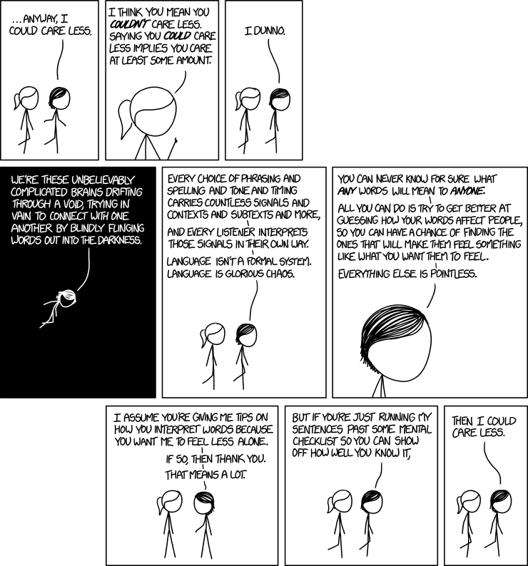
Hva er sentiment?
Sentiment: Mening, følelse, emosjon, subjektivitet, affekt, anmeldelse…
Også iblant kalt “meningsuthenting” (opinion mining)
Det vi forsøker å få frem gjennom språket
Enheter og variabler i sentimentanalyse
Enhet
- Dokument
- F. eks. en anmeldelse, en kommentar, en tweet, et avisinnlegg…
- Setning
- Relatert til subjektivitetsestimering
- Enhet eller aspekt
- Finner gjenstand og sentiment tilknyttet gjenstand (eks. “bilen er komfortabel men har stygg farge”)
Variabel
- Positiv, nøytral eller negativ
- 2, 1, 0, -1, -2
- 1-5 stjerner
Formell definisjon av sentiment
Formell definisjon av “mening”:
\((e{_i}, a_{ij}, s_{ijkl}, h_{k}, t_{l})\)
“Allokeringen av midler i statsbudsjettet har ikke vært tilferdsstillende.” Jensen, 5. oktober 2022
- \(e{_i}\): Enhet - statsbudsjettet
- \(a_{ij}\): Aspekt - allokeringen av midler
- \(s_{ijkl}\): Mening - ikke tilfredsstillende
- \(h_{k}\): Meningsholder - Jensen
- \(t_{l}\): Tidspunkt - 5. oktober 2022
Sentimentanalyse: Gitt dokument X, finn alle meningssammensetninger \((e{_i}, a_{ij}, s_{ijkl}, h_{k}, t_{l})\).
Eksempel på anvendelse
Kunders anmeldelse av produkter
Polarisering knyttet til politisk tilhørighet
Tilbakemeldinger i spørreskjema
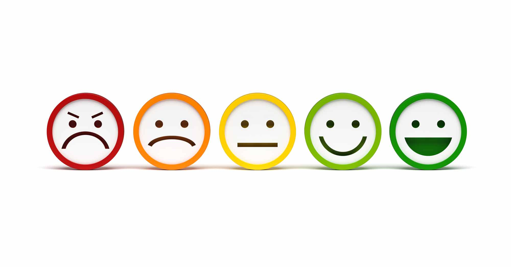
Hvordan gjennomføre en sentimentanalyse?
It all comes together…
- Trenger du å hente ut enheter?
- Finn navngitte enheter (se forelesning 3)
- Trenger du å hente ut aspekter?
- Finn taledeler (se forelesning 3)
- Trenger du å finne sentiment?
- Bruk en sentimentordbok (se denne forelesningen)
- Eller klassifiser utfra et treningsdatasett (se forelesning 6)
Eksempler med sentimentordbok
Egenlagd sentimentordbok
ordbok <- tibble(sentiment = c("positive", "positive", "negative", "negative"),
ord = c("happy", "beautiful", "impossible", "ugly"))
ordbok## # A tibble: 4 x 2
## sentiment ord
## <chr> <chr>
## 1 positive happy
## 2 positive beautiful
## 3 negative impossible
## 4 negative uglyFerdiglagd ordbok (fra tidytext kapittel 2)
tidytext_ordbok <- get_sentiments("bing")
sentiment <- brexit %>%
select(influencer, date, hit_sentence) %>%
unnest_tokens(input = hit_sentence,
output = ord) %>%
inner_join(tidytext_ordbok, by = c("ord" = "word"))
sentiment## # A tibble: 895,823 x 4
## influencer date ord sentiment
## <chr> <date> <chr> <chr>
## 1 @DeniseMembery 2022-01-15 right positive
## 2 @DeniseMembery 2022-01-15 dangerous negative
## 3 @DeniseMembery 2022-01-15 hell negative
## 4 @DeniseMembery 2022-01-15 bent negative
## 5 @DeniseMembery 2022-01-15 precious positive
## 6 @DeniseMembery 2022-01-15 revenge negative
## 7 @DeniseMembery 2022-01-15 propaganda negative
## 8 @007stirling 2022-01-15 rich positive
## 9 @007stirling 2022-01-15 oblivious negative
## 10 @ukleadstheworld 2022-01-15 win positive
## # ... with 895,813 more rows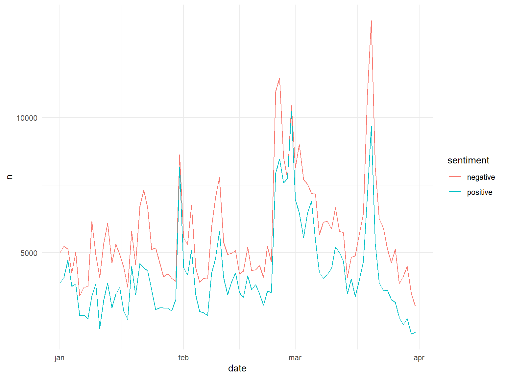
Ordbok spesielt for sosiale medier
library(vader)
set.seed(193)
brexit_subset <- brexit %>%
sample_n(10)
brexit_subset %>%
mutate(hit_sentence = str_to_lower(hit_sentence)) %>%
mutate(sentiment = vader_df(hit_sentence)) %>%
select(influencer, sentiment) %>%
unnest(cols = c(sentiment))## # A tibble: 10 x 8
## influencer text word_~1 compo~2 pos neu neg but_c~3
## <chr> <chr> <chr> <dbl> <dbl> <dbl> <dbl> <dbl>
## 1 @magaluf22 "rt @alastairmorg~ {0, 0,~ 0.784 0.24 0.76 0 0
## 2 @lcdk_uk "qt @themarkgodfr~ {1.8, ~ 0.421 0.088 0.912 0 0
## 3 @lucypascoe1984 "rt @marieannuk: ~ {0, 0,~ 0 0 1 0 0
## 4 @paulpeele11 "@evolvepolitics ~ {0, 1.~ 0.751 0.444 0.556 0 0
## 5 @nicolegellson "@monty_bhoy @iri~ {0, 0,~ 0 0 1 0 0
## 6 @robinmc76 "@danielmgmoylan ~ {0, 0,~ -0.66 0 0.714 0.286 0
## 7 @MariaMo32975161 "@marieannuk yep ~ {0, 1.~ -0.625 0.059 0.773 0.168 0
## 8 @StockpilingS "rt @campbellclar~ {0, 0,~ -0.091 0.08 0.832 0.088 1
## 9 @peterdilworth1 "rt @bobjsweeney:~ {0, 0,~ -0.599 0 0.794 0.206 0
## 10 @beerdri01118796 "rt @marshallcart~ {0, 0,~ 0 0 1 0 0
## # ... with abbreviated variable names 1: word_scores, 2: compound, 3: but_countNorsk ordbok
#devtools::install_github("martigso/NorSentLex")
library(NorSentLex)
nor_fullform_sent$positive %>% head()## [1] "absolutt" "absolutta" "absolutte" "absoluttene" "absolutter"
## [6] "absoluttet"## [1] "abnorm" "abnorme" "abnormt" "abort" "aborten" "abortene"Eksempel med treningsdata
Gitt at vi har ferdigmerket data…
## # A tibble: 1,000 x 3
## influencer text senti~1
## <chr> <chr> <chr>
## 1 @thomasevansadur "QT @fbpe_mark: Yes. Remainers come this daft. ; @T~ Neutral
## 2 @davidofhook "RT @Sky48115666: Aren't we all sick of defending b~ Negati~
## 3 @william93666824 "RT @AndyTuohyDesign: @johnredwood Maybe they are h~ Negati~
## 4 @JaneWright17 "RT @gavinesler: If the UK wants to be regarded as ~ Neutral
## 5 @mats_247 "RT @QprEver: \U0001f1ec\U0001f1e7Tobias Ellwood \U~ Neutral
## 6 @nigelschofield6 "RT @andrew_lilico: QT @DmitryOpines: Unless we thi~ Neutral
## 7 @Smartie98914401 "RT @4114nJ: @Femi_Sorry Er...not quite. The people~ Neutral
## 8 @felicefan "@Peston That reality is because we left the EU. No~ Negati~
## 9 @kazzaB33 "RT @DMinghella: Putin tells his people outrageous ~ Negati~
## 10 @Spg1990 "RT @tomhfh: Did the Prime Minister really say Ukra~ Neutral
## # ... with 990 more rows, and abbreviated variable name 1: sentiment… så kan vi kjøre en veiledet læringsmodell for å predikere sentiment
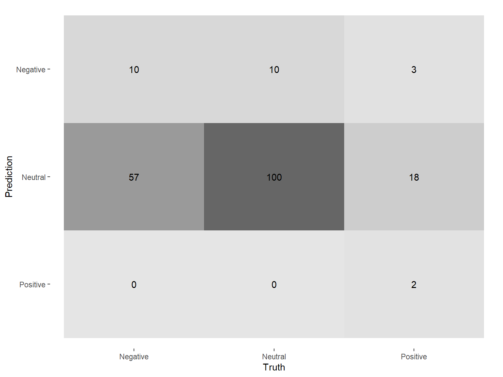
Hvordan få merket data til sentimentanalyse?
Hvordan vet en algoritme at en tekst er positiv eller negativ?
- Steg 1: Få mennesker til å merke et utvalg av tekstene.
- Steg 2: Tren opp en algoritme til å forstå sammenhengene og gjøre samme kategorisering
- Steg 3: Anvend algoritmen på resten av tekstene.
Utfordringer
- Sarkasme og ironi (snakker om “krisetider”…)
- Negasjoner (jeg liker ikke melk)
- Indirekte meninger (da jeg måtte på sykehus var det ingen trafikk)
- Subjektivitet vs. sentiment (denne laptopen er helt genial!!! vs. denne laptopen har lang levetid)
- Uttrykker dokumentet sentiment over samme tema hele tiden? (økonomien er bra, men helsetilstanden min har forverret seg)
- Språk
- Behov for treningsdata
Diskusjonsspørsmål
- Hvilke forskjeller i uttrykk for sentiment tror du det er mellom en 10-åring og en 60-åring?
- Tror du sentiment kan si oss noe om hva folk vil stemme i valg?
- Hva tenker du om å bruke metoder fra markedsanalyse på statsvitenskapelige spørsmål?
Takk for i dag!
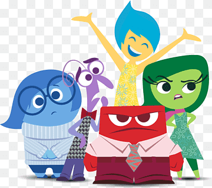